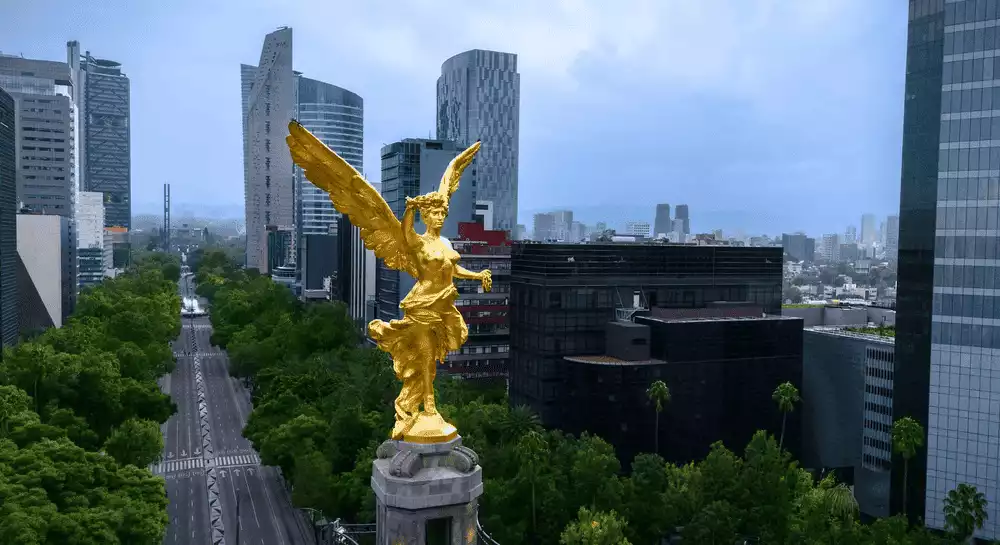

Anaheim California
Los Estados Unidos

Anaheim es una ciudad ubicada en las afueras de Los Ángeles, en el Sur de California. En ella, se encuentra el centro turístico Disneyland, un enorme complejo de atracciones familiares temáticas de Disney, restaurantes, hoteles y tiendas. La ciudad también cuenta con equipos deportivos profesionales. El Honda Center es un estadio cubierto donde juega el equipo de hockey Anaheim Ducks, y Angel Stadium es el estadio donde el equipo de béisbol Angels de Los Ángeles juega como local.
Leer MasCiudad de México
Ciudad de México es la densamente poblada capital de México que se encuentra a gran altura. Es famosa por su Templo Mayor (un templo azteca del siglo XIII), la Catedral Metropolitana de México, de estilo barroco, de los conquistadores españoles y el Palacio Nacional, que alberga murales históricos de Diego Rivera. Todos estos hitos se ubican en torno a la Plaza de la Constitución, la enorme plaza principal conocida también como el Zócalo.
Leer MasCuliacán
Ciudad en México

Culiacán, oficialmente Culiacán Rosales, es una ciudad del noroeste de México. Es capital, ciudad más poblada del estado de Sinaloa y cabecera del municipio homónimo.
Leer Mas